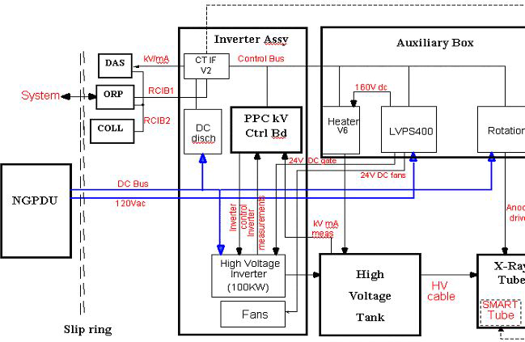
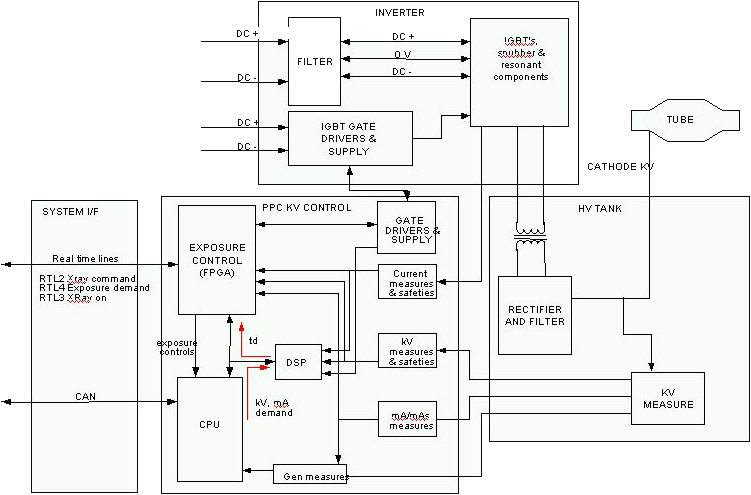
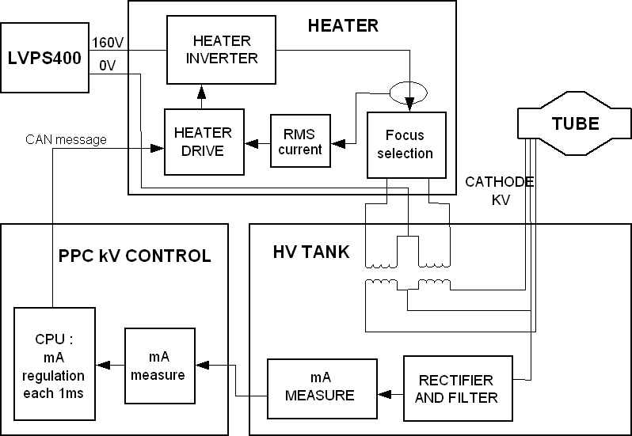
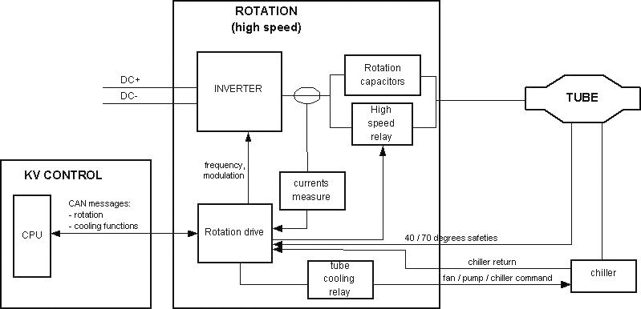

Operating Documentation
Direction 5193891-800, Rev# 5
LightSpeed 5.X Pro16 Limited Access Service Information (Adv)
Operating Documentation |
| Last Revised: | February 2005 |
This module contains the following information:
Section 1 - Introduction
Section 2 - kV Function
Section 3 - mA Function
Section 4 - Rotation Function
Section 5 - Thermal Management
Section 6 - Power-On
Section 7 - Components
Section 8 - Generator Firmware
The X-Ray generation subsystem for LightSpeed 5.x systems comes with completely different packaging compared to previous LightSpeed products. This system is based on the “Jedi” platform. Jedi is an engineering name given to a family of compact high frequency X-Ray generators. This generator family covers a wide range of applications from mobile equipment RAD/RF up to this state of the art CT system. The X-Ray generator in this system is capable of operating at a peak power of 100kW.
This X-Ray generation subsystem is a mono-polar design requiring only one High Voltage Transformer to deliver kV to the X-Ray tube. In this case, the anode is grounded. Thus it follows that there is only one High Voltage Cable.
The PPC control board (stands for Power PC) is the master controller of the subsystem. This board is responsible for controlling kV and mA, directing other circuit boards in the subsystem, and collecting and storing operating data and reporting it to the CT scanner's host computer. It is operated by its own internal firmware and also utilizes an internal database to store data.
Illustration 1: JEDI Overview Block Diagram

The PPC control board controls the kV function.
After power on, the CPU downloads the exposure control configuration stored in FPGA DSP.
The FPGA then:
configures the real-time lines to the ORP
drives the inverter gate drive supply to provide the right voltage for the IGBT gates
monitors the DC bus voltage
monitors the IGBT gates voltage
When the CPU receives the kV, mA, exposure time commands from the ORP. When the CPU receives the exposure enable signal it drives the filament drive and starts anode rotation and prepares the generator for exposure. Once all functions are ready, the CPU informs the exposure control firmware that the generator is ready for an exposure.
When exposure command goes active:
the CPU:
starts the exposure time counter
starts the mAs and brightness counters (for RAD AEC cut-off, not used in CT)
measures kV demand, kV measure, DC bus, gate voltage, HV tank temperature each 16ms during the exposure
calculates new kV, mA reference in RAD tomography or ABC
applies new kV, mA reference if the system/operator changes the parameters
the FPGA:
starts the HV power inverter by driving the IGBTs
put X-ray on in its active state
regulates the inverter
monitors the hardware safeties: tube spits, no kV, over kV, HV inverter over current, kV regulation error
When any of the following occur:
exposure command goes down
exposure enable goes down
a fatal safety error occurs
a timer reaches its final count:
the FPGA:
stops the inverter
puts X-ray on in its inactive state
the CPU:
stores tube spit count, exposure count, exposure parameters
computes the generator thermal status
Illustration 2: kV Function

If a Tube Spit Error occurs during the exposure:
The FPGA stops the inverter for 100us and informs the CPU which then reads and stores the error and calculates if the max number of spits is reached. If the max number of spits is not reached, the generator allows the system to continue scanning.
If a Hardware Safety Error occurs during the exposure:
The FPGA stops the exposure and reports the error to the CPU which then reports the error to the host computer. When a measurement goes out of range, the CPU stops the exposure and reports the error to the system.
The PPC control board's CPU in conjunction with the heater board controls the mA function. After power on, the CPU sends a preheat command to the heater board.
First the CPU receives the kV, mA and exposure time commands from the ORP. When the CPU receives the exposure enable signal, it calculates the acquisition filament drive to apply to the filament in order to match the required tube mA.
This calculation is based on:
the filament drive values stored in the tube database
interpolation for calculating the filament drive for the (kV, mA) point selected
the filament aging correction
Then it either:
calculates a boost command to apply to the filament to accelerate the filament temperature rise and sends it to the heater board. In this case, the boost duration is up to 400ms and is followed by a “go” command sent to the heater board.
or does not use any boost command and directly sends a “go” command to the heater board
When the exposure command goes active, the CPU:
starts the exposure
measures the mA every 1ms (beginning 5ms after exposure starts), compares it to the mA demand and continuously calculates the filament drive to apply to reach the mA demand
sends every 1ms, the new filament drive to the heater function
updates the mA demand if required by the system or by generator algorithm (ABC mode, falling load mode, variable mA mode)
checks mA accuracy
The heater board:
selects the proper filament as commanded by the CPU.
receives the filament drive demand each 1ms as sent from the CPU
measures the heater inverter RMS current two times per 1ms, compares it to the filament drive demand and applies the inverter frequency to reach the right filament drive current
checks inverter RMS current to avoid exceeding the max filament temperature
sends each 100ms the inverter RMS current measure to the PPC board's CPU
When the exposure command goes to the inactive state, the CPU either stays with the last filament drive demand, goes into preheat mode or stops the filament drive to allow a fast filament cooling before going into preheat. This rule depends on the application.
Illustration 3: mA Function

The PPC control board's CPU in conjunction with the Rotation Board controls the X-Ray tube's anode rotation.
When the CPU receives the exposure enable signal it sends the anode speed reference to the rotation board.
Upon receiving this command, the rotation drive:
compares this reference to the present anode speed. If the present speed is lower:
gets from the tube database the current required to accelerate the anode and the acceleration time to apply
drives the inverter with the frequency required for the speed selected
measures the phase currents, compares them to the current demand, and applies the modulation rate to supply the proper stator current
counts the acceleration time
monitors rotation safeties
sends back each 100ms the speed to the PPC control board CPU
The speed feedback is used by the PPC control CPU to authorize the exposure
Once the acceleration time is complete, the rotation drive applies the inverter current required to maintain anode speed.
When the exposure command goes to its inactive state, the CPU either:
sends a speed=0 command to the rotation to stop the anode rotation
applies a “hold” time to maintain the anode rotation speed before stopping it
applies a “hold” time to maintain the anode rotation speed before going to a low speed mode
depending on the application.
Illustration 4: Rotation Function

The host computer controls the thermal management of the X-Ray Generation subsystem. It uses an algorithmic predictive approach to ensure that the system is capable of completing all scans necessary for a given prescription. The generator provides protection of components.
Just as previous LightSpeed systems the X-Ray tube utilizes a Heat Exchanger. However, LightSpeed 5.X systems come with a separate heat exchanger unit on the gantry.
The tube coolant depends on tube type. Currently, Performix Pro 80 X-Ray tubes are filled with a Propylene Glycol / Water solution and Performix Pro 100 tubes are filled with tube oil. The MSDS should be consulted when necessary.
The heat exchanger can hold either coolant, and the hose connections have been reversed to prevent inadvertent connection of one type to the other.
As a result of LightSpeed 5.x having separate a heat exchanger and X-Ray tube units, the possibility that the amount of coolant present in the system can change over time. For example, consider the case of removing a tube while it is very hot. The temperature of the tube forces the coolant to expand and thus forcing fluid out of the tube. The volume of the heat exchanger is fixed, as it cannot allow air in its chamber. Thus there is an overflow bellows located on the heat exchanger. When the new tube is added to the system, it arrives with its original factory specified amount of oil, which means that the oil contained in the overflow bellows is now extra oil. Therefore we must ensure that the oil level is periodically checked and appropriate measures are taken if needed.
The Inverter detects an over-pressure or tube over-temperature and under-temperature states using switches. The over-pressure switch is located on the heat exchanger unit, while the tube temperature switch is located on the X-Ray tube and plugs into the Heat Exchanger's Power Interface board. The feedback from these sensors is sent to the JEDI Inverter via the CAN cable from the Power Interface board.
It is also possible, though not required, for X-Ray tubes to have a fluid bleeder to protect itself from overpressure. Fluid lost due to this is generally minimal.
The PPC control board measures the temperature of the tank and the inverter. The inverter temperature inputs are a parallel inductor temperature sensor, and a temperature sensor on the DC Discharge board. Tank temperature feedback is obtained through a sensor in the tank oil and sent to the PPC board via the tank's kV measure board.
At power-up the Power PC performs its own initialization, checks its memory integrity (checksum of program and NVRAM) and starts the communication with its peripherals as well as the system. Communication is permanently checked afterwards. It then initializes the Rotation board and Heater board with their respective database parameters and loads PPC control board's FPGA. During power-on, the Heater board and the Rotation board CPUs are initialized and checked their memory integrity and hardware. If a problem is encountered, a PRD error is reported to the PPC board. Eight LEDs (S7…S0) on the PPC control board shows software status and/or error conditions. More information is contained in the Troubleshooting section.
Generator power on starts when input phases are applied to the generator. In the case of a CT system, this is anytime 120VAC is applied to the gantry, hence power is applied to the LVPS400 board. The low voltage power supply starts providing the +15V/-15V bus. The +15V rise triggers the 5V rise on the PPC control board, heater, and rotation boards. The PPC CTRL board then sends the signal to the LVPS400 to activate the other outputs (160VDC for Heater board, 24V for fans, etc.).
At this stage, many actions take place in parallel:
PPC Control Board
software starts running the PRDs (1s)
software downloads the control FPGA which starts regulating the inverter gate drivers supply
PPC CTRL board software downloads the DSP
software checks the hardware configuration:
reads inverter identification
reads HV tank identification
reads CT system interface identification
talks via Control Bus to identify that all functions are present
The software monitor the DC Bus pre load and full load through low voltage power supply (LVPS400) board. The sequence is the following:
Check that the DC Voltage value=0
Monitor pre-load relay on ACDC board during 15 seconds
Check DC Bus voltage over 400V
Monitor load contactor for full charge
Remove pre-load Relay after 5 seconds
Check the DC Bus voltage over 450VDC min and under 850VDC max
Errors are reported if something is wrong
Heater Board:
micro-controller starts running the PRDs (in case of error, LED ST0/ST1 flashes)
then goes to idle state
heater supply bus reaches its final value
Rotation Board:
micro-controller starts by running the PRDs (in case of error Led ST0/ST1 flashes)
then goes to idle state
gates drive supply reaches its final value
DC Bus reaches its final value
Inverter:
DC Bus reaches its final value on inverter LC and on gate drive supply
Once each main function is alive the control firmware:
checks the generator configuration consistency (in case of error, error message is sent)
installs the right hardware drivers
talks to the system or the console (in the case where the generator cannot find system presence, PPC boardLEDs S0-S7 display an error code)
configures the final control FPGA
sends to rotation and heater databases to respective circuit boards based on the knowledge of the tube selected
At this level, if no error has been detected, the generator is ready to drive exposures.
For theory information on X-Ray Generation sub-system components, please refer to X-Ray Generation Components (Pro 16). It contains the following information:
HV Power Inverter, including Gate Command
Power PC (PPC) Control Board, including:
CPU Core
JEDI Internal Control Bus
Exposure Control
HV Power Inverter Control
HV Chain Measure and Safeties
External Interfaces
HV Tank, including:
EMI Protection
HV Cable
Auxiliary Box, including:
Low Voltage Power Supply 400 (LVPS400)
Rotation Board
Heater Board
The generator firmware runs on the PPC control board's Power PC CPU. Its main functions are:
console and/or system communication
exposure sequencing (rotation, heater, exposure control, mA regulation)
tube/generator thermal protection
Image quality algorithms
tube calibrations
Tube/generator tracking
generator diagnostics (application background diagnostics and service diagnostics) For more on diagnostics, see the Troubleshooting >> Diagnostics section of this publication.
For further information on Generator Firmware (including the topics listed below), please refer to Generator Firmware (Pro16).
System Communication
Exposure Sequencing
Tube Spit Counting
Filament Aging
Database
Tracking and Trending (TnT) data
For additional TnT data information, see also: